- Overview
- Properties
- Multiple File Uploader Control Example
- Multiple File Uploader in Offline Mode
- Attaching an Input Document File Using the Multiple File Uploader
- Accessing Files with JavaScript
- File Storage
- Accessing Multiple Files with PHP
Overview
The Multiple File control, allows more than one file to be uploaded and attached to the current case. To select and upload files, click on the Choose Files button of the control. The dialog box to select the files will vary according to browser. After being selected, the file will be listed below the field. The upload process is immediate, meaning that as soon as the user selects the file, a progress bar will show the percentage of the upload completed. It will turn green to indicate that the file has been completely uploaded to the ProcessMaker server. This makes it possible to save time when submitting the form. The icon of this control in the toolbar of the designer is the following:

| Warning: The Multiple File Uploader control is not supported in Single Dynaform web entry or External Registration. The web entry is supported for Multiple Steps web entry in ProcessMaker 3.2.2 and later. |
When the control is dropped into the Dynaform designer, the Create/Select Variable window is displayed to create or select a variable.
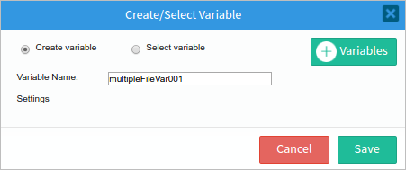
After a variable is assigned to the control, the control field will look like the image below:

| Warning: The variable assigned to the Multiple File Uploader control is independent of the input document related to the control. Therefore, any changes made to the Input Document will NOT be reflected in the control. |
While designing a Dynaform or in preview mode, it is not possible to upload a file, but it is possible to preview how uploaded files will be listed.
| Note: Multiple File Upload is supported in ProcessMaker Mobile. |
| Desktop | Mobile |
|---|---|
|
|

While running a case, the Multiple File Uploader control has a progress bar that indicates how long a file will take to upload.
| Desktop | Mobile |
|---|---|
|
|


The Multiple File Uploader control allows users to attach multiple files to the Dynaform when running a case or previewing a Dynaform as follows:
| Desktop | Mobile |
|---|---|
|
|


Once the files are uploaded, a new icon will be displayed to download the files, as shown in the image below.

| Warning: Note that if the disable_download_documents_session_validation flag is set to "0" or is not included in the env.ini file, the user will be restriced from downloading the file if he/she is not the one who uploaded the file. Therefore, he/she will need an Input Document process permission to download the file. |
Properties
It is possible to customize a file control's functionality and behavior by configuring its properties:
| Type | multipleFile (Read Only) |
||||
| Variable |
Click the ... option to select a multiplefile variable from the list of available variables. See this section to learn more about how to relate a
variable to a control.
|
||||
| Variable Data Type | After a variable has been related to the control, this property shows the data type of the variable (Read Only). | ||||
| ID |
[Required] Field and HTML unique identifier. |
||||
| Label | The label of the control | ||||
| Input Document | Used to link an Input Document to the control.
When creating a Multiple File control, the File Extensions, Max File Size and Size Unit properties are disabled, to enable these properties click the (X) button next to the Input Document property.
|
||||
| Required | By checking this option, an asterisk is added to the label to indicate that the field is required, meaning that a file must be uploaded to the field.
Note: The Required property only verifies that there is a file attached to the control, but does not check if the current user had attached another a new file. As of ProcessMaker3.6.1, if a Multiple File Uploader field is required and you enable disable_php_upload_execution , ProcessMaker validates to not upload PHP files and displays the following message: |
||||
| Required Field Error Message |
Available Version: As of ProcessMaker 3.2.2 By checking the Required option, this property becomes available to customize the message that will be displayed if the user does not attach a file to the control. The result to add "Please attach your Resume to this application form" is as follows:
|
||||
| File Extensions |
Set the allowed file extensions in this property. Use a comma to separate all the extensions that will be enabled for the control. For example “ If this property is left empty, then any file extension is allowed. |
||||
| Max File Size |
Set the maximum allowed file size of the file to be uploaded. By default the maximum file size is 1024 KB. |
||||
| Max File Number | Available Version: As of ProcessMaker 3.7.0 Maximum number of files that can be uploaded to a Multiple File Uploader field. |
||||
| Size Unit | Define the unit (KB or MB) of the maximum file size. | ||||
| Versioning | If the Multiple File Uploader control is related to an Input Document with the versioning property enabled, this property will be set to "Yes", meaning that each field that is uploaded to the control can be replaced by a new one. Otherwise, this property will be set to "No". | ||||
| Display Mode |
[Required] Display mode:
|


File Extensions
The File extensions property defines the allowed extensions of the files that can be uploaded in the Multiple File Uploader field:

The allowed extensions are defined in the format filename.extension. Use * (asterisk) as a wildcard; * alone allows all types of files. Use *.extension to allow a specific type of file, such as *.pdf or *.doc. To allow multiple types of files, separate them with , (commas). For example, *.png, *.jpg, *.jpeg, *.tif, *.tiff, *.gif allows only image files.
For example, if only plain text files may be attached to the file control, then define this property as *.txt. When running cases, the File control dialog will indicate what type of file can be uploaded:
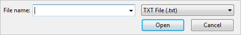
If a file named TextLetter.txt is uploaded, the file control will verify that it is a .txt file and allow the Dynaform to be submitted.

If a file with a different extension is attached, a validation error message is shown. Notice that even if a file is modified to have the allowed file extension, the multiple file control will check the real file type and will display the following message if the file is not allowed.

Note: If using version 3.3.1 or later, ProcessMaker will check whether files correspond to their extension and only allow certain types of files to be uploaded. To allow more types of file extensions to be uploaded, see Compatible Content and File Extensions.
Considerations:
-
For multiple file fields that are NOT required
- If the field accepts all file extensions and no file is attached when running a case, then the validation passes and the form can be sent or submitted without restrictions.
- If the field accepts all file extensions and a file is attached when running a case, then the validation passes unless it has a size limit, in that case another validation, explained in the next property, is evaluated. Nevertheless, if the field only accepts some types of extensions and no file is attached, then the validation passes.
- If the field only accepts certain types of extensions and a file is attached, then the validation passes unless the user attaches a file with an invalid extension. In that case, a message is shown with a warning that indicates that the file extension is not supported. Nevertheless, if the field only accepts certain types of extensions and no file is attached, then the validation passes.
-
For required Multiple file fields
- When running a case, if the field accepts all file extensions (*), and there is no file attached to the case, the validation will fail because the field is required and therefore the form cannot be submitted.

- When running cases, if the field accepts all file extensions and a file is attached, then the validation PASSES unless it has a size limit; in that case another validation will be performed, as explained in the next property.

- If the field only accepts some types of extensions and no file is attached, then the validation FAILS because the field is required and the form can NOT be sent nor submitted.
- If the field only accepts some types of extensions, and a file with the correct extension is attached, then the validation passes unless the user attaches a file with an invalid extension. In that case, an error message is shown that indicates that the file extension is not supported. In that case, the form can NOT be submitted until a valid file is attached.
- When running a case, if the field accepts all file extensions (*), and there is no file attached to the case, the validation will fail because the field is required and therefore the form cannot be submitted.
-
Special case
- When running cases, if a file is attached to a required field and the form is submitted to the next step, but then the user goes back to the previous step, the file already submitted is shown as a link under the Multiple File Control.

If the field is required, and the user removes all the files attached, it is necessary to upload at least one file again.
- When running cases, if a file is attached to a required field and the form is submitted to the next step, but then the user goes back to the previous step, the file already submitted is shown as a link under the Multiple File Control.
Max File Size
This property defines the maximum allowed size of uploaded files. By default, this property is set as 1024 KB. To define this property, enter a positive number greater than zero:

If set to zero (0), then the file size is unlimited.
When running a case, the multiple file field will validate the size of the file before attaching it to the field. If the size of the file surpasses the size defined in this control, an error message displays explaining the file is exceeding the maximum file size. The error message is available as of ProcessMaker 3.2.2.
| Desktop | Mobile |
|---|---|
| "File size exceeds the allowable limit of {1MB}" | "The file size exceeds the allowed limit of 1.0 MB" |
|
|


Considerations:
-
For Multiple File fields that are NOT required
- If the max file size limit validation for the file attached FAILS, the file is not uploaded to the field. Nevertheless, as the field is not required, the form can still be submitted or sent.
-
For required Multiple File fields
- If the max file size limit validation for the file attached FAILS, the file is not uploaded to the field and the form CAN NOT be submitted or sent.
-
Multiple File Uploader field in a grid
- Files in grids have the same characteristics as explained previously, but in cases when the grid is not associated to a grid variable, and a valid file is attached and sent, the new data is not inserted into the database. This is because the grid MUST be related to a variable for the data to be sent correctly.
Max File Size Validation With PHP Configuration
As of ProcessMaker 3.3.6, the Max File Size property validates according to the post_max_size and upload_max_filesize settings in the php.ini file. Take into account the following considerations when validating Max File Size in Multiple File controls:
- The post_max_size and upload_max_filesize settings in the php.ini file should be honored. Meaning that no configuration must overwrite these parameters to accept bigger files.
- The validation applies the smaller value between the Max File Size of the control and the values of the php.ini file.
- The Dynaform designer validates if the value of the Max File Size control property is bigger than the values in the php.ini file. If the values is bigger than the values in php.ini, the "The maximum value of this field is XX Mbytes" alert displays. Where XX is the maximum value allowed by the PHP file.

- The REST endpoints to create and update an Input Document must return the corresponding error if the file size is bigger than the allowed value in the PHP file.
{
"error": {
"code": 400,
"message": ""The file size is bigger than the maximum allowed, the maximum size allowed is XX Mbytes""
}
}
Note: The post_max_size considers the size of all files uploaded. Therefore, it is recommended that each file uploaded with the multiple and single file controls in the form is not bigger than the post_max_size parameter in the PHP file.
Size Unit
This property defines the unit (KB, MB) of the size defined in the Max File Size property explained previously.
Max File Number
Available Version: As of ProcessMaker 3.7.0
The Max file number property defines the maximum number of files that can be uploaded to a Multiple File Uploader field. If set to zero (0), then the file number is unlimited. By default, this property is set as 0. To define this property, enter an integer positive number equal or greater than zero or enter a case variable (@@, @%, @=).

Otherwise, if you enter an invalid value, the property sets to zero (0) and an error message displays: Invalid Configuration: the "Max File number" value should be integer.

When running a case, the multiple file field validates the number of allowed files before attaching it to the field. If the number surpasses the number of allowed files defined in this control, a message displays: The maximum number of files allowed was reached

If a problem arises, take into account the following:
- Case variables with
Nullvalue are invalid. - Case variables do not work with the Multiple File Uploader control in Grids. Then, the Max file number property with case variables does not work in a Grid control.
- If Versioning is enabled and the Max file number property contains an integer value, then that number of instances occurs. For example, if the Max file number property is
3, then it can upload three files with N versions of each one:- File 1: version 2, version 3, ...
- File 2: version 2, version 3, ...
- File 3: version 2, version 3, ...
- File 4 can not be uploaded unless one of the previous files and their versions are removed.
- When an invalid file is uploaded and its reference remains in the Multiple File Uploader field, it is a restriction to upload new files while this reference is not removed.
Versioning
Available Version: The following property is available as of ProcessMaker version 3.2.2.
If the Multiple File Uploader control is related to an Input Document with versioning enabled, the Versioning property of the Multiple control will be set to "Yes", as shown in the image below.

This means that it is possible to upload multiple versions of each file to the control. To do this, the Multiple File Control will display the following four options:

- Download the file
 : Download the file selected. Note that each version of the file has its own Download button.
: Download the file selected. Note that each version of the file has its own Download button. - Upload a new version
 : Opens the navigation window to select a new version of the file. Only one file can be uploaded at a time.
: Opens the navigation window to select a new version of the file. Only one file can be uploaded at a time. - Delete the file : Deletes the file and all its versions. A single version can NOT be deleted.
- Show versions
 : Shows all the versions of the file.
: Shows all the versions of the file.
Same options display in ProcessMaker Mobile:

To upload a new version of the file, click the pencil icon and select the new version of the file in the navigation window that opens. The new version will replace the previous version and the previous version will be listed under the Show versions button. Older versions can be downloaded but not edited.
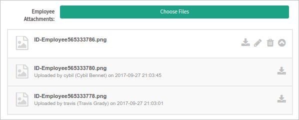
Previous versions from a file display in ProcessMaker Mobile as follows:

The list of versions is available in all display modes. Users can upload a new version or delete the file only in Edit mode. In View or Disabled mode, users can download only the files that they uploaded.
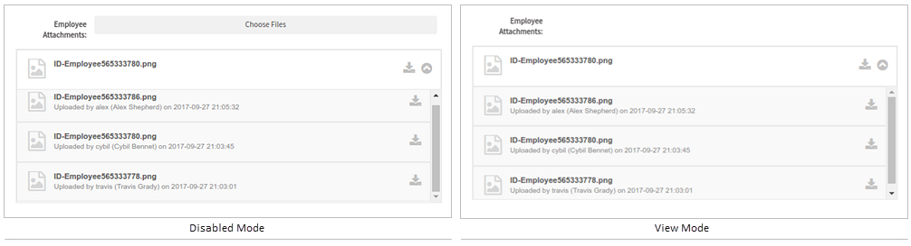
If the file selected does not met the requirements (file size or extension), an error message will be displayed. To close it, click the little cross at the top right corner of the message.
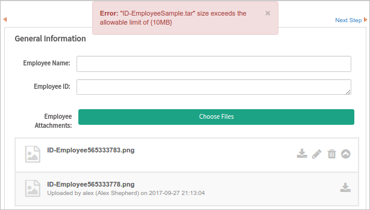
The versions of a file can be seen as well if the Multiple File Uploader is included in a grid.

Note: Versioning is supported on ProcessMaker Mobile.
Multiple File Uploader Control Example
For this example, add a "fileupload" control by dragging and dropping it onto the Dynaform Designer from the Web Controls panel. The image below shows what the control will look like when its rendered on the Dynaform.

Immediately after adding the control, the Create Variable window will appear. A variable can be created in this window, or can be selected from the existing process variables. A variable can also be created by clicking on the Variables button. A new variable will need to be created for this example, so stay in the Create/Select Variable window. Even though the variable name can be edited, keep it as "multipleFileVar001". Click on the underlined Settings option to display more variable configurations.

The options available in the setting change depending on the type of control. For example, the multiplefile control only has one setting: "Type". The Type setting has only one option, "Multiple File". To learn how to assign an Input Document, read this documentation. Then in the Create Variable window, click on the Save button to finish this configuration.
Click on the empty space in the control field to display its properties in the left side panel.

Another way to add a variable is by clicking on the underlined ellipsis next to the Variable property, as observed in the image.

The Create Variable window will appear, where a variable can be created or selected from existing variables. Once a variable is chosen, the Variable Data Type and the ID properties will be automatically filled in with the name of the variable.

The ID property can be used with JavaScript code. To add JavaScript to the ID property, click on the light grey border of the Dynaform (which is the space outside of the control fields) to display the Dynaform properties. When the properties are displayed, locate the javascript property and click on the edit... button to open the JavaScript editor.

In the JavaScript editor, add code to set the label of the control (read this section for more information). For this example, add the following code:

When the control is rendered, the label will be then set to "ProcessMaker", as seen in the image below.

The following property is the Name property, which is an HTML field name. By default, a control with this property has the same name as the ID. When the ID is changed by the user, the name does not change and keeps its original configuration. The name can also be changed by entering a new value in the property.

Continuing on, the Label property changes the label of the control, which will be displayed in the control field when the Dynaform is rendered.
For the Required property, there is only a checkbox available. When checked, an asterisk is added next to the control field to indicate that the field is required and the form won't be able to be submitted until the field is properly filled in.

The Display Mode property determines whether the control is editable, viewable, disabled or uses the same display mode set for the entire Dynaform. The image below shows what the control looks like in each view mode.

Note 1: The file management is different in the iOS system mobile. To learn more about how to upload files in a Multiple File Uploader control, see Files in iOS.
Note 2: If you experience Invalid Format/Corrupted File messages when trying to download files in a Multiple File Uploader field, ensure you have configured correctly display_errors and error_reporting according to Supported Stacks installed in your server.
Restriction
Please consider the following restrictions before uploading files in a Multiple File Uploader control:
- As a best practice, do not upload files in the Multiple File Uploader control before defining the variables in the ProcessMaker case. In this way, the variable names will be displayed correctly in the Destination Path. Review Defining Variables to define case variables inside a process.
- If there is more than one Multiple File Uploader in a Dynaform, as a known issue, it could create duplicated folders when uploading files while runing a case. The My Documents feature displays the duplicated folders.
Multiple File Uploader in Offline Mode
Available Version: As of ProcessMaker Mobile 2.3.0
As long as you have enabled offline support for the Task that includes the Multiple File Uploader, you are able to use it. The uploaded files are sent to the server when the connection is re-established along with case routed.
Multiple File Uploader When Offline Example
This is an example about how to use the Multiple File Uploader in offline mode. Please follow the nexts steps:-
Access the Administration Settings.

-
Make sure that in Offline you are able to Synchronize cases and tables.
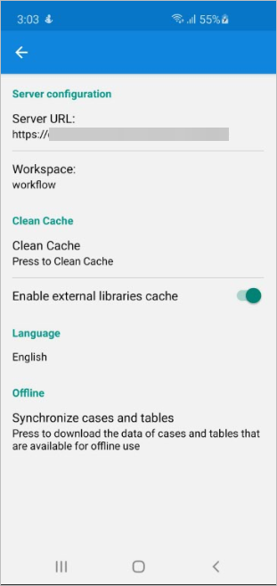 -
Disable the Wi-Fi.
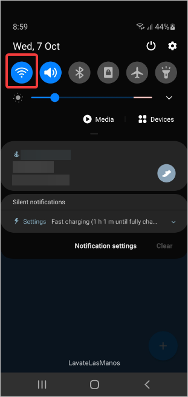The Working offline option displays.

-
Access a case and make sure that it has the Available offline option.
Note: To configure a process that allows its cases to be offline, see how to enable offline support for a Task.
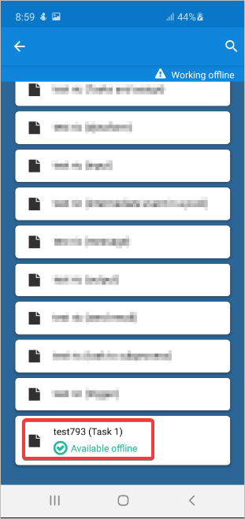 -
For this example, consider the inputs to be selected of the following image.
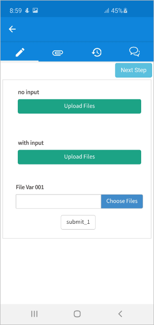 -
Select multiple files and continue the case. Remember that the uploaded files are sent to the server when the connection is re-established along with case routed.

The message The case will be sent when back online displays.

Attaching an Input Document File Using the Multiple File Uploader
It is possible to attach an Input Document to a Dynaform using the Multiple File Uploader field by going to the Multiple File control properties. This means that files uploaded to the Multiple File Uploader field in a Dynaform can be displayed at a later point in an Input Document step. One advantage of associating these fields with an input document, is that the Input Document interface can be used to view all the files uploaded. The user can also delete or add new versions of the files if they have the correct process permissions and versioning is enabled. Another advantage is that Input Documents allow the uploaded file to be tagged and placed into a specific folder under My Documents, so it is easier to find the uploaded files later.
To associate an Input Document with the Multiple File Uploader field, it is recommended to first create the Input Document.
Then, simply click on the underlined ellipsis in the Multiple File Uploader control properties as seen in the image below.
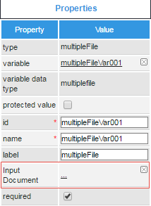
A new Input Documents window will appear. Select the available Input Document by clicking on it.

Uploading files to an Input Document through the Multiple File Uploader field in a Dynaform is useful for uploading more than one file at the same time to an Input Document. To ensure that the user uploads a file to an Input Document, make the Multiple File Uploader field required.

To upload more than one file to an Input Document, then a normal Input Document step should be used.
After associating the Multiple File variable with the Input Document, the Multiple File properties will take precedence over the Input Document properties.
Multiple File Uploader Field in a Grid
Multiple File Uploader fields in grids have the same characteristics as explained above, but in cases when the grid is not associated with any grid variable and a valid file is attached and sent, the new data is not inserted into the database. This is because the grid MUST have an associated variable to correctly save the data.
The Multiple File Uploader control has a different appearance in grids. To upload a file, click on the green  icon.
icon.

A new dialog window will be displayed to upload the files.
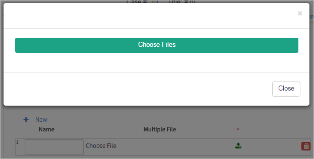
Click on the Choose Files button to upload multiple files. To edit a file, just delete it and upload it again. Once done uploading files, close the dialog.
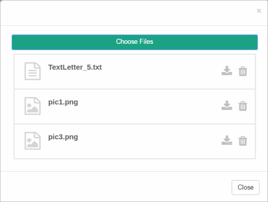
The uploaded files will be listed in the Multiple File Uploader field inside the grid.

Accessing Files with JavaScript
To learn how to manipulate Dynaform controls using JavaScript, see JavaScript in DynaForms.
Files in ProcessMaker 3 have the following field components:
- Label: The text displayed above or to the left of the field in the Dynaform, which identifies it.
- Value: The filename of the last file selected in the file control.
- Text: An array of the filename(s) in the file control.
JavaScript Methods
Some of the JavaScript methods used to manipulate Multiple file fields include:
| Method | Description |
|---|---|
jQuery("#fieldID").getValue() |
Returns the filename of the last file selected in the file control, or the last file added to its associated Input Document if no file has been selected. |
jQuery("#fieldID").getText() |
Returns an array of the filenames of the files that were previously added to the Input Document associated with the file control, plus the filename of the last file selected in the file control (if any). The filenames are listed in the order that the files were added. Remember that only one file can be added by the File control, but there can be multiple files that have already been added to the Input Document. |
jQuery("#fieldID").getLabel() |
Returns the control field's label, which is the text displayed above or to the left of the field to identify it in the Dynaform. |
jQuery("#fieldID").setLabel("newLabel") |
Sets the control field's label, which is the text displayed above or to the left of the field to identify it in the Dynaform. |
Note: The setValue() and setText() methods exist for file controls, but do not have any effect, since files can only be selected manually by the user.
To see code examples for these methods, see JavaScript Functions and Methods.
Structure of Multiple File Uploader Controls
A Multiple File Uploader control consists of:
- A visible
<button>with the ID of the multiple file control, which is clicked to select a file to be uploaded. After a file is selected, the name of the selected file is displayed under this button. - A hidden field with the ID
"form[id]"for each file selected, where the selected file is temporarily stored. - A hidden input field with the ID
"form[id_label]", which holds an array of the files that have been previously uploaded to the Input Document associated with the Multiple File Uploader control, plus the last file selected with the file control.
For example, a file control with the ID "receipts" might have the following HTML structure:
<div id="multipleFileVar001" name="field-multipleFileVar001"
class="pmdynaform-field-multipleFile pmdynaform-edit-multipleFile form-group col-sm-12 col-md-12 col-lg-12 pmdynaform-field">
<div class="row">
<label for="multipleFileVar001" class="col-md-2 col-lg-2 control-label pmdynaform-label">
<span data-toggle="tooltip" data-placement="bottom" class="textlabel">multipleFile</span>
<span class="pmdynaform-field-required">*</span>
</label>
<div class="col-md-10 col-lg-10 pmdynaform-field-control">
<div class="pmdynaform-multiplefile-control">
<button type="button" class="btn btn-uploadfile">Choose Files</button>
<input type="file" multiple="multiple" accept="" style="display:none">
</div>
</div>
</div>
<div class="pmdynaform-multiplefile-box"><div class="multiplefile-row row">
<div class="multiplefile-container col-xs-12">
<div class="multiplefile-icon col-xs-1">
<span class="multiplefile-icon">
<i class="fa fa-file-image-o" aria-hidden="true"></i>
</span>
</div>
<div class="pm-multiplefile-download col-xs-8">
<div class="multiplefile-title">
<div> 94f5432c6216e8141daa5980891fc766.jpg</div>
</div>
</div>
<div class="multiplefile-buttons col-xs-3">
<div class="multiplefile-button-delete col-xs-5">
<i class="fa fa-trash" aria-hidden="true"></i>
</div>
<div class="multiplefile-button-download col-xs-5">
<a href="http://192.168.51.113/sysdani31/en/{skin}/cases/cases_ShowDocument?a=86931799257ec16530e59c7069364091&v=1">
<i class="fa fa-download" aria-hidden="true"></i>
</a>
<a></a>
</div>
<a>
<div class="multiplefile-button-pencil col-xs-5" style="display: none">
<i class="fa fa-pencil" aria-hidden="true"></i>
</div>
</a>
</div>
<a></a>
</div>
</div>
<div class="multiplefile-row row">
<div class="multiplefile-container col-xs-12">
<div class="multiplefile-icon col-xs-1">
<span class="multiplefile-icon">
<i class="fa fa-file-image-o" aria-hidden="true"></i>
</span>
</div>
<div class="pm-multiplefile-download col-xs-8">
<div class="multiplefile-title">
<div> 3c5c332d7f8018d4447a771dcb284447.jpg</div>
</div>
</div>
<div class="multiplefile-buttons col-xs-3">
<div class="multiplefile-button-delete col-xs-5">
<i class="fa fa-trash" aria-hidden="true"></i>
</div>
<div class="multiplefile-button-download col-xs-5">
<a href="http://192.168.51.113/sysdani31/en/{skin}/cases/cases_ShowDocument?a=21786185157ec168f6d4e05077370210&v=1">
<i class="fa fa-download" aria-hidden="true"></i>
</a>
<a></a>
</div>
<a>
<div class="multiplefile-button-pencil col-xs-5" style="display: none">
<i class="fa fa-pencil" aria-hidden="true"></i>
</div>
</a>
</div>
<a></a>
</div>
</div>
</div>
</div>
<input name="form[multipleFileVar001][0][appDocUid]" type="hidden" value="86931799257ec16530e59c7069364091">
<input name="form[multipleFileVar001][0][name]" type="hidden" value="94f5432c6216e8141daa5980891fc766.jpg">
<input name="form[multipleFileVar001][0][version]" type="hidden" value="1">
<input name="form[multipleFileVar001][1][appDocUid]" type="hidden" value="21786185157ec168f6d4e05077370210">
<input name="form[multipleFileVar001][1][name]" type="hidden" value="3c5c332d7f8018d4447a771dcb284447.jpg">
<input name="form[multipleFileVar001][1][version]" type="hidden" value="1">
</div>
The user interacts with the visible button, which doesn't have an ID, but can be searched for using its "pmdynaform-multiplefile-control" class. For example, the following code changes the border color of the button used by the "receipts" multiple file control:
File Storage
When a file is uploaded to a Multiple File control while running a case, it is stored in the file system of the ProcessMaker server. It is renamed with its unique ID for the case-document and its version number, but it retains its original extension.
Files are stored in the following location on the server:
INSTALL-DIRECTORY/shared/sites/WORKSPACE/files/XXX/XXX/XXX/XXXXXXXXXXXXXXXXXXXXXXX/CASE-DOCUMENT-UID_VERSION.EXT
Where:
WORKSPACEis the name of the workspace, which is named "workflow" by default, and can be specified with the@@SYS_SYSsystem variable in a trigger.XXX/XXX/XXX/XXXXXXXXXXXXXXXXXXXXXXXrepresents the case's unique ID. By default, the ID is divided into a series of 4 subdirectories to avoid the 32K file limits of Linux's ext3 file system. In a trigger, the current case ID of the current case is stored in the @@APPLICATION system variable, or can be looked up in the APPLICATION.APP_UID, APP_CACHE_VIEW.APP_UID or APP_DOCUMENT.APP_UID fields in the database. The G::getPathFromUID() method can be used in a trigger to automatically generate the correct path from the case ID.CASE-DOCUMENT-UIDis the unique ID of the case-document, which is stored in the APP_DOCUMENT.APP_DOC_UID field in the database.VERSIONis the document version number, which is always set to 1, except when the Multiple file Uploader field is related to an Input Document that has versioning enabled and the user has uploaded a new version of the file (which file fields don't allow). The new version can be found in the APP_DOCUMENT.DOC_VERSION field in the database.EXTis the extension of the uploaded file, such asdocorjpg. The file extension can be found by using the AppDocument::Load() method or by looking up the filename of the uploaded file with the following database query:SELECT CON_VALUE AS FILENAME FROM CONTENT WHERE CON_ID='CASE-UID' AND CON_CATEGORY='APP_DOC_FILENAME'
Example path in Linux/UNIX:
/opt/processmaker/shared/sites/workflow/files/905/262/500/57158b1b439014072150115/74863719957158b39af56d2076904431_1.png
Example path in Bitnami install in Windows:
Note: Bitnami is no longer used in ProcessMaker as of version 3.4.0. This must be considered when accessing the ProcessMaker directory.
C:\Bitnami\processmaker-3.3.0-1\apps\processmaker\htdocs\shared\sites\workflow\files\905\262\500\57158b1b439014072150115\74863719957158b39af56d2076904431_1.pngIn a trigger, the file path to a file can be determined using the defined constants PATH_DOCUMENT (which contains a path such as "/opt/processmaker/shared/sites/workflow/files/") and PATH_SEP (which is "/" or "\" depending on the operating system).
For example, the following trigger code generates the same path as the examples above:
$path = PATH_DOCUMENT . $g->getPathFromUID('90526250057158b1b439014072150115') . PATH_SEP . '74863719957158b39af56d2076904431_1.png';
File Storage in the Database
When a Dynaform that contains a Multiple File Uploader field is submitted, a new record is created for the uploaded file in the APP_DOCUMENT table in the database, which contains the following fields:
APP_DOC_UID: The unique ID of the case document, which identifies the uploaded file.DOC_VERSION: The version of the case document file, which is an integer counting the version starting from1. It can only be greater than1if the file is associated with a variable of an Input Document that has versioning enabled.APP_UID: The unique ID of the case where the file was uploaded.DEL_INDEX: The delegation index of the task in the case where the file was uploaded.DOC_UID: The unique ID of the Input Document that holds the file, if the Multiple File Uploader field is associated with an Input Document. If there is no Input Document associated to the Multiple File Uploader field, then it is set to'-1'.USR_UID: The unique ID of the user who uploaded the file.APP_DOC_TYPE: The type of case document, which is'ATTACHED'if the Multiple File Uploader field is not associated with an Input Document, or'INPUT'if it is associated with an Input Document.APP_DOC_CREATE_DATE: The datetime in'YYYY-MM-DD HH:MM:SS'format when the file was uploaded.APP_DOC_INDEX: The document index of the file.FOLDER_UID: The unique ID of the folder where the file is located in the graphical interface under My Documents. If the field is not associated with an Input Document or the Input Document has no specified folder, this field is set to''(empty string).APP_DOC_PLUGIN: Always set to''(empty string). No longer used in ProcessMaker 3.APP_DOC_TAGS: If the field is associated with an Input Document, then this field lists the tags for the Input Document, which are separated by commas. By default, all Input Documents have the'INPUT'tag, but other custom tags can be defined. If not associated to an Input Document, then set toNULL.APP_DOC_STATUS: The status of the file, which is either 'ACTIVE' or 'DELETED'. Note that Multiple File Uploader fields don't provide a way to delete uploaded files, but the file can be deleted by a user who has the PM_FOLDERS_ADD_FILE permission in his/her role in My Documents. It can also be deleted if the field is associated with an Input Document that is a step in a task and the user has been assigned the Process Permissions to delete files in the Input Document.APP_DOC_STATUS_DATE: Always set toNULL.APP_DOC_FIELDNAME: The name (not its id) of the field where the file was uploaded. If uploaded in a Multiple File field in a grid, then it is set to'[grid-variable][row-number][file-field-name]'. For example, a value of'[clientList][2][contractFile]'means that the file was uploaded to the second row of a grid whose variable is "clientList" and whose Multiple File field has the name "contractFile". If the file was uploaded in an Input Document step (not a Multiple File Uploader field), then it is set toNULL.APP_DOC_DRIVE_DOWNLOAD: Serialized information, which is always set to'a:0:{}'.
Additionally, records are added to the CONTENT table, which contains information about the uploaded file.
For example, the database has the following information about an uploaded file with the unique ID '74863719957158b39af56d2076904431':
The filename of the uploaded file is found with the query:
Warning: If a user uploads a file into the Multiple File control, but the Dynaform containing the control is not submitted, the files uploaded into the Multiple File control won't be related to the assigned variable and won't be visible in next steps of the process. This behavior is a known issue that will be fixed in upcoming ProcessMaker versions.
Storage of Files in Grids
When a Multiple File Uploader field is placed in a grid, then files can be selected for each row in the grid to be uploaded when the Dynaform is submitted. Each file is stored separately in the server's file system and a separate record is created
for each file in the APP_DOCUMENT table. The only difference from a normal Multiple File Uploader field, is that the APP_DOCUMENT.APP_DOC_FIELDNAME field will contain 'grid-variable_row-number_file-name'.
For example, a grid whose variable is named "receipts" is submitted, and it has three rows with a Multiple File field named "receiptFile". The following information might be stored in the APP_DOCUMENT table about the three files:
mysql> select APP_DOC_UID, DOC_VERSION, APP_UID, DOC_UID, APP_DOC_TYPE, APP_DOC_INDEX, APP_DOC_FIELDNAME from APP_DOCUMENT;
| APP_DOC_UID | DOC_VERSION | APP_UID | DOC_UID | APP_DOC_TYPE | APP_DOC_INDEX | APP_DOC_FIELDNAME |
|---|---|---|---|---|---|---|
| 9981562705718050e816959058033346 | 1 | 2490631975717ff351ccda1005474345 | -1 | ATTACHED | 1 | [receipts][1][receiptFile] |
| 9208148915718050e921ba1095027176 | 1 | 2490631975717ff351ccda1005474345 | -1 | ATTACHED | 2 | [receipts][2][receiptFile] |
| 6366198845716e982128ba0053902036 | 1 | 3202231885716e94385eca5078684093 | -1 | ATTACHED | 3 | [receipts][3][receiptFile] |
Note: If a grid containing a multiple file field doesn't have an associated array variable, then the selected files in the grid will not saved when the Dynaform is submitted.
After the Dynaform is submitted, the filenames of the selected files in the grid's case variable can be found doing a search in the APP_DOCUMENT table for the case ID and for APP_DOC_FIELDNAME, which contains the name of the grid variable and the name of the Multiple File field in the grid, to get the file's ID in the APP_DOC_UID field. Using the file's ID, its filename can be found by querying the CONTENT table.
The following trigger example creates an array of the filenames uploaded in the current case to a grid whose variable is named "clientList" and Multiple File field is named "contractFile":
$gridVar = 'clientList';
$fileField = 'contractFile';
$aFiles = array();
$query = "SELECT C.CON_VALUE AS FILENAME, AD.* FROM CONTENT C, APP_DOCUMENT AD
WHERE AD.APP_UID='$caseId' AND APP_DOC_FIELDNAME LIKE '{$gridVar}_%_{$fileField}' AND
AD.APP_DOC_STATUS = 'ACTIVE' AND AD.APP_DOC_UID = C.CON_ID AND
C.CON_CATEGORY = 'APP_DOC_FILENAME' ORDER BY AD.APP_DOC_FIELDNAME";
$results = executeQuery($query);
if (is_array($results)) {
for ($i=0; $i < count($results); $i++) {
$aFiles[] = $results[$i]['FILENAME'];
}
}
Accessing Multiple Files with PHP
When the user selects files in a Multiple File control, the files are immediately uploaded and saved in the file system of the server where ProcessMaker is installed. The files are also stored in the APP_DOCUMENT table in the database. When the Dynaform holding a Multiple File control is submitted, a case variable is created for the Multiple File control with information about the uploaded files in an array of arrays.
Accessing the MultipleFile Case Variable
The files uploaded to Multiple File controls are stored in a case variable with the following format:
The version number will always be "1", unless the multipleFile field is associated with an Input Document that has the Enable Versioning option selected.
For example, the following Multiple File control associated with the @=multipleContractFiles variable has two files in it:
To obtain the ID and filename of the first file in the multipleContractFiles control, create a trigger that is set to execute after the Dynaform holding the multipleContractFile control is submitted, with the following PHP code:
Before trying to access a Multiple File variable, it is a good idea to use isset() to check if the Multiple File variable was defined (in the case the user used the Steps menu to skip the Dynaform), and use empty() to check whether at least one file was uploaded.
Adding Single Files to Multiple File Controls
A file that was uploaded to a traditional File control can be transferred to a MultipleFile control. In the following example, a Dynaform contains a File control associated with the @@contractFile variable, where one
file can be uploaded.

The file that was uploaded by the user is then transferred to a Multiple File control located in a second Dynaform:

A trigger that is fired before the second Dynaform copies the information about the uploaded file from the first DynaForm and adds it to the MultipleFile control associated with the @=multipleContractFiles variable. The following trigger code first checks whether a file was selected in the File control and then gets its unique ID and filename. It then checks whether the file as already been added to the MultipleFile control. If not, it adds an associative array of information about the file to the MultipleFile control:
if (isset(@@contractFile) and @@contractFile != '[]') {
$fileId = json_decode(@@contractFile)[0];
$filename = json_decode(@@contractFile_label)[0];
//if the multipleFile doesn't yet exist, then create it:
if (!isset(@=multipleContractFiles)) {
@=multipleContractFiles = array();
}
//check whether the file as already been added:
$addFile = true;
foreach (@=multipleContractFiles as $aFile) {
if ($aFile['appDocUid'] == $fileId) {
$addFile = false;
break;
}
}
if ($addFile) {
//add an additional file:
@=multipleContractFiles[] = array(
"appDocUid" => $fileId,
"name" => $filename,
"version" => "1"
);
}
}
To test a sample process that adds the selected file in a File control to a MultipleFile control, download and import the Add_File_to_MultipleFile_control-1.pmx process (right click on the link and select "Save Link As").
Clearing All Files in a Multiple File Control
To clear all the files in a Multiple File control using a trigger, use for to loop through all the files in the Multiple File variable. For each file, use the AppDocument::Remove() method to mark the file as deleted in the database and unlink() to delete the file from the server's file system. Then, set the Multiple File variable to array() (an empty array) to remove its contents.
For example, if the variable associated with the Multiple File control is named "productSpecFiles", the following trigger will delete the files in the control if the "cancelProduct" checkbox is marked.
isset(@=productSpecFiles) and !empty(@=productSpecFiles)) {
$ad = new AppDocument();
for (@=productSpecFiles as $aFile) {
//mark as deleted in the APP_DOCUMENT table in database:
$ad->remove($aFile['appDocUid'], $aFile['version']);
//construct path to the stored file in the server's file system:
$ext = pathinfo($aFile['name'], PATHINFO_EXTENSION);
$g = new G();
$path = PATH_DOCUMENT . $g->getPathFromUID(@@APPLICATION) . PATH_SEP .
$aFile['appDocUid'] . '_' . $aFile['version'] . '.' . $ext;
//delete file on server's file system:
unlink($path);
}
//clear files in Multiple File variable
@=productSpecFiles = array();
}